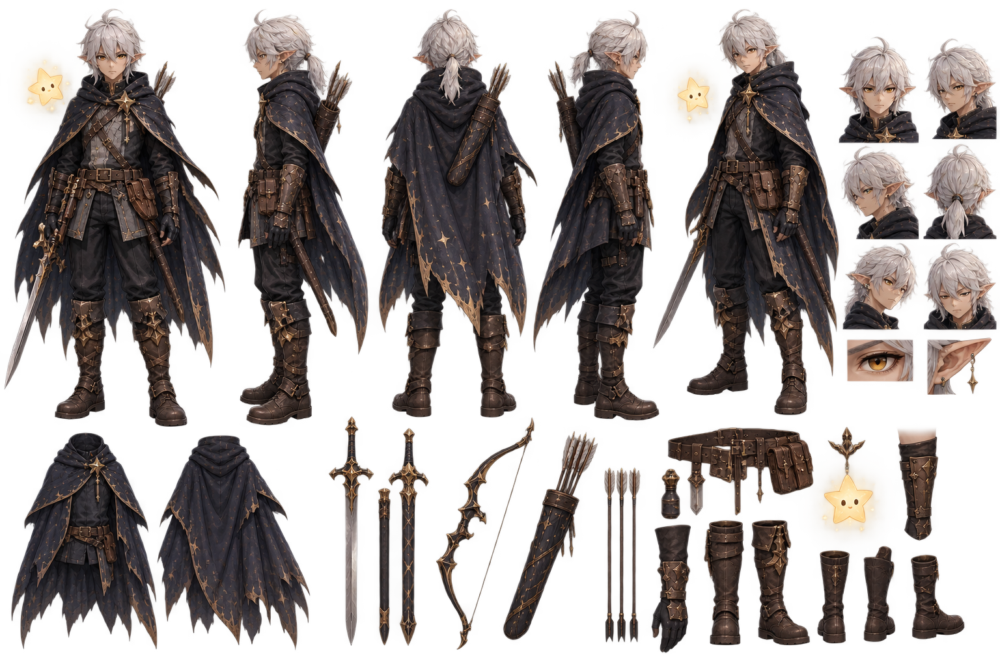
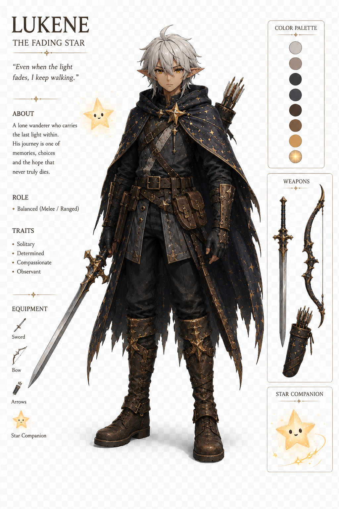

PROJECT DEEP DIVE
The Fading Star
The sword isn't just a sword. The journey isn't just a journey. The darkness isn't just darkness. The fading star isn't just magic.
A 2D adventure/platformer I'm just starting to prototype in Unity — my step up from FloopyChicken, meant to teach me multiple scenes, dialogue, inventory, abilities, enemies, NPCs, saving/loading, animation, and real level design.
OVERVIEW
What This Project Is
The Fading Star is a story-driven fantasy adventure game, built around themes like loneliness, memory, and connection — and the idea that even a fading star can still guide someone through the darkness. You play as Lukene, a young wandering warrior with goblin ears. He travels through a beautiful but dying world, carrying a fragment of celestial light that is gradually disappearing. Lukene isn't a traditional chosen hero — he doesn't want to save the world, and he doesn't even understand why he's there. But he knows that the light inside him is fading, and that if it disappears forever, something important will be lost.
STORY IDEA
The Real Story Behind the Fading Star
When you help someone, it becomes brighter. When you're overwhelmed, pieces of stardust fall from it.
This fantasy story is basically a metaphor for real life. Lukene starts the game believing he has to travel alone. He doesn't hate people, but he's gotten used to:
- Dealing with problems himself
- Hiding when he's struggling
- Feeling like nobody would really understand
- Helping other people while ignoring himself
- Leaving before someone can leave him
- Carrying memories that hurt
- Wondering whether he is actually important to anyone
So he became a traveller. He keeps moving, because stopping means having to think about everything he's running from.
THE DARKNESS
The Darkness isn't depression. It's disconnection — from other people, your memories, your identity, your emotions. The WHO describes loneliness as the painful gap between the connections someone has and the connections they want or need. It also notes that loneliness and social isolation can affect mental health and wellbeing.
MECHANICS
Planned Systems
A running list of the systems this project is meant to teach me, roughly in the order I plan to tackle them.
The Star (Core Mechanic)
The star's glow reacts to the player's actions dimming under pressure, brightening when they help someone.
Multiple Scenes
Moving between areas/levels and loading them cleanly in Unity.
Dialogue
A basic dialogue system for talking to NPCs and telling the story.
Inventory
Picking up, storing, and using items found in the world.
Abilities
Player abilities that unlock as the story and the star progress.
Enemies & NPCs
Basic enemy behavior, plus NPCs to talk to and help.
Saving / Loading
Persisting player progress between sessions.
Animation & Level Design
Character animation and actually designing levels, instead of a single endless loop like FloopyChicken.
AI USE
Where AI Fits In
I'm planning or used
SCREENSHOTS
Models & Concept Art
Early looks at the character, world, and prototype — this section will grow as the project moves past the concept phase.

Character Concept
Early concept art for the main character and the star.

Character Concept (Full)
Early concept art for the main character, front view.

Prototype
First look at the prototype in Unity.

World & Level Sketches
Early sketches of the world and level layout ideas.
DEV LOG
Time Per Part
A rough breakdown of time spent on each part of the project so far.
| Part | Time |
|---|---|
| Concept & Story | — |
| Character & World Design | — |
| Prototyping | — |
| Programming | — |
| Art / Assets | — |
| Total | — |